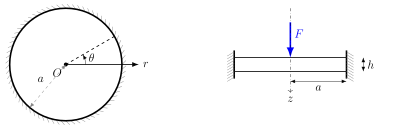
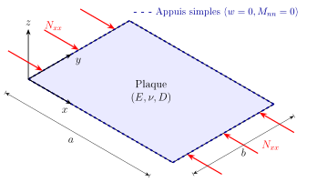

PC 2 · Méthodes énergétiques
Structures minces — plaques · ISAE-SUPAERO, 2e année
Chaque question a sa propre solution repliée : essayez d’abord, puis dépliez. Les encadrés Simulation refont les calculs de Ritz en direct.
Exercice 1 — Plaque circulaire soumise à une force concentrée
Soit une plaque circulaire mince de rayon \(a\) et de rigidité \(D\), encastrée sur tout son contour (\(r = a\)) et soumise à une force ponctuelle \(F\) en son centre. On approche la flèche \(w(r)\) par la méthode de Ritz avec la fonction de base \[ \phi(r) = \left(1 - \frac{r^2}{a^2}\right)^2, \qquad w(r) = c\, \phi(r), \] où \(c\) est le paramètre de Ritz à déterminer.

- Vérifiez que la fonction de base satisfait les conditions aux limites cinématiques.
- Calculez l’énergie de déformation.
- Calculez le travail de la force.
- Calculez le paramètre de Ritz \(c\) en minimisant l’énergie potentielle.
- Comment la méthode se modifie-t-elle avec deux fonctions de base, \(w(r) = c_1 \phi_1(r) + c_2 \phi_2(r)\) ? \[ \phi_1(r) = \left(1 - \frac{r^2}{a^2}\right)^2, \qquad \phi_2(r) = \left(1 - \frac{r^2}{a^2}\right)^3 \]
Énergie de flexion d’une plaque isotrope : \[ U = \frac{D}{2} \int_{\Omega} \left[ (\Delta w)^2 - 2(1-\nu) \det(\Hess w) \right] d\Omega . \] En coordonnées polaires et dans le cas axisymétrique (\(\partial_\theta = 0\)) : \[ U = \pi D \int_{0}^{a} \left[ \left( \frac{d^2w}{dr^2} + \frac{1}{r}\frac{dw}{dr} \right)^2 - 2(1-\nu)\frac{1}{r}\frac{dw}{dr}\frac{d^2w}{dr^2} \right] r \, dr . \] Remarque : le second terme est une dérivée totale, \(\;\dfrac{dw}{dr}\dfrac{d^2w}{dr^2} = \dfrac{1}{2} \dfrac{d}{dr} \left[ \left(\dfrac{dw}{dr}\right)^2 \right]\).
Solution analytique pour une force concentrée \(F\) : \[ \begin{aligned} w(r) &= \frac{Fa^2}{16\pi D}\left[1 - \frac{r^2}{a^2} + 2 \frac{r^2}{a^2}\ln\left(\frac{r}{a}\right)\right], \\ M_{rr} &= -\frac{F}{4\pi}\left[1 +(1+\nu)\ln\left(\frac{r}{a}\right)\right], \qquad M_{\theta\theta} = -\frac{F}{4\pi}\left[\nu +(1+\nu)\ln\left(\frac{r}{a}\right)\right]. \end{aligned} \]
Encastrement en \(r=a\) : \(w(a)=0\) et \(w'(a)=0\). \[ w(a) = c\,(1 - 1)^2 = 0, \qquad \frac{dw}{dr} = -\frac{4c}{a^2}\, r \left(1 - \frac{r^2}{a^2}\right) \;\Rightarrow\; \left.\frac{dw}{dr}\right|_{r=a} = 0 . \] La fonction est cinématiquement admissible. On note aussi \(w'(0) = 0\) : indispensable pour la régularité et la symétrie au centre.
Le terme de Gauss est une dérivée totale : \[ I_2 = \int_{0}^{a} \frac{1}{r}\frac{dw}{dr}\frac{d^2w}{dr^2}\, r \, dr = \frac{1}{2} \left[ \left(\frac{dw}{dr}\right)^2 \right]_{0}^{a} = 0, \] puisque la pente est nulle en \(r=a\) et en \(r=0\). Il reste \(U = \pi D \int_{0}^{a} (\Delta w)^2\, r \, dr\) avec \[ \frac{dw}{dr} = -\frac{4c}{a^2}r + \frac{4c}{a^4}r^3, \qquad \frac{d^2w}{dr^2} = -\frac{4c}{a^2} + \frac{12c}{a^4}r^2, \qquad \Delta w = \frac{8c}{a^2} \left( 2\frac{r^2}{a^2} - 1 \right). \] \[ U = \pi D \frac{64c^2}{a^4} \int_{0}^{a} \left( 4\frac{r^5}{a^4} - 4\frac{r^3}{a^2} + r \right) dr = \pi D \frac{64c^2}{a^4}\cdot\frac{a^2}{6} = \frac{32\pi D}{3a^2}\, c^2 . \]
La force est appliquée en \(r=0\) : \(\;W = F\, w(0) = F c\).
\[ \Pi(c) = \frac{32\pi D}{3a^2}\, c^2 - F c, \qquad \frac{d\Pi}{dc} = \frac{64\pi D}{3a^2}\, c - F = 0 \;\Longrightarrow\; c = \frac{3Fa^2}{64\pi D} = \frac{9Fa^2(1-\nu^2)}{16\pi Eh^3}. \] Le paramètre \(c\) est la flèche au centre. La solution exacte vaut \(w(0) = \dfrac{Fa^2}{16\pi D} = \dfrac{4Fa^2}{64\pi D}\) : Ritz donne exactement 75 % de la valeur réelle. Cette sous-estimation (sur-rigidification) est typique de Ritz avec une base polynomiale simple, incapable de capturer la singularité \(r^2\ln r\) de la solution exacte.
\(\phi_1\) et \(\phi_2\) vérifient chacune \(w=0\) et \(w'=0\) en \(r=a\). L’énergie étant quadratique, \(\Pi(c_1, c_2)\) est un paraboloïde ; on annule son gradient, \(\partial\Pi/\partial c_1 = \partial\Pi/\partial c_2 = 0\), ce qui donne un système \(2\times2\) : \[ \begin{bmatrix} K_{11} & K_{12} \\ K_{21} & K_{22} \end{bmatrix} \begin{bmatrix} c_1 \\ c_2 \end{bmatrix} = \begin{bmatrix} f_1 \\ f_2 \end{bmatrix}, \qquad K_{ij} = 2\pi D \int_{0}^{a} \Delta\phi_i\, \Delta\phi_j \, r \, dr, \qquad f_i = F\, \phi_i(0) . \] \(\mathbf K\) est symétrique définie positive. Le calcul donne \[ \mathbf K = \frac{\pi D}{a^2}\begin{bmatrix} 64/3 & 16 \\ 16 & 96/5 \end{bmatrix}, \qquad c_1 = \frac{Fa^2}{48\pi D}, \quad c_2 = \frac{5Fa^2}{144\pi D}, \] soit \(w(0) = c_1 + c_2 = \frac{8}{9}\,w_{\rm exact}(0)\) : l’enrichissement fait passer de 75 % à 89 %. Ajoutez des fonctions :
Exercice 2 — Flambement par la méthode de Rayleigh–Ritz
Une plaque rectangulaire \(a \times b\), simplement appuyée sur tout son contour, de rigidité \(D\), est soumise à une compression uniforme \(N_{xx}^{\rm comp}\) sur les bords \(x=0\) et \(x=a\) (ici prise positive en compression). Le phénomène est gouverné par \[ D\Delta^2 w = -N_{xx}^{\rm comp}\,\frac{\partial^2 w}{\partial x^2}. \] L’énergie de déformation et le travail de la compression valent \[ U = \frac{D}{2} \int_0^a \!\!\int_0^b \left\{ (\Delta w)^2 - 2(1-\nu) \det(\Hess w)\right\} dx\,dy, \qquad W = \frac{1}{2} \int_0^a \!\!\int_0^b N_{xx}^{\rm comp} (\partial_x w)^2 \, dx \, dy, \] avec \(\det \Hess w = \partial_{xx} w\, \partial_{yy} w - (\partial_{xy} w)^2\).

- Montrez que pour une plaque rectangulaire avec \(w=0\) sur le contour, le terme \(\int\det \Hess w\) (courbure de Gauss linéarisée) est nul. Suggestion : \[ \partial_{xx} w\, \partial_{yy} w - (\partial_{xy} w)^2 = \frac{\partial}{\partial x} \left( \partial_x w\, \partial_{yy} w \right) - \frac{\partial}{\partial y} \left( \partial_x w\, \partial_{xy} w \right). \]
- Par Rayleigh–Ritz, évaluez la charge critique \(N^{\mathrm{cr}}_{\mathrm{p}}\) avec le polynôme \(w_{\mathrm{p}}(x,y) = x y\,(x-a)(y-b)\).
- Calculez \(N^{\mathrm{cr}}_{\mathrm{s}}\) avec le double sinus \(w_{\mathrm{s}}(x,y) = \sin\left(\frac{\pi x}{a}\right) \sin\left(\frac{\pi y}{b}\right)\).
- Pour une plaque carrée (\(a = b\)), évaluez l’écart relatif entre les deux charges et commentez-le à la lumière des conditions aux limites.
- Avec les modes \(w_{mn} = \sin\left(\frac{m \pi x}{a}\right) \sin\left(\frac{n\pi y}{b}\right)\), évaluez la charge critique pour un rapport \(a/b\) fixé. Suggestion : minimisez par rapport à \(m\) et \(n\).
En théorie linéaire, le flambement est un problème aux valeurs propres généralisé : la charge critique \(N^{\rm cr}\) est la plus petite valeur de \(N_{xx}^{\rm comp}\) pour laquelle \(D\Delta^2 w = -N_{xx}^{\rm comp}\,\partial_{xx} w\) admet une solution non nulle.
Le quotient de Rayleigh est intimement lié aux valeurs propres (voir la méthode de Rayleigh–Ritz, ou en génie civil Lu et al. (2025)). Avec \(U\) l’énergie de déformation et \(W\) le travail d’une compression unitaire : \[ R(w) = \frac{U}{W}, \qquad W = \frac{1}{2} \int_0^a \!\!\int_0^b \left(\partial_x w\right)^2 dx\,dy, \qquad N^{\mathrm{cr}} = \min_w R(w). \] On approche le mode de flambement par une approximation de Ritz — d’où le nom Rayleigh–Ritz.
Le numérateur \(U\) représente la résistance interne (énergie de flexion stockée) ; le dénominateur \(W\), le potentiel d’activation du chargement. À \(N_{xx} = N^{\rm cr}\), le travail de la compression compense exactement l’énergie élastique de flexion : le système bascule d’un état stable (plan) à un état neutre (\(\Pi = 0\)).
L’intégrande s’écrit comme une divergence : \[ I_G = \int_\Omega \nabla \cdot \begin{pmatrix} \partial_x w\, \partial_{yy} w \\ -\partial_x w\, \partial_{xy}w \end{pmatrix} d\Omega = \oint_{\Gamma} \bm{n} \cdot \begin{pmatrix} \partial_x w\, \partial_{yy} w \\ -\partial_x w\, \partial_{xy}w \end{pmatrix} ds . \]
- Bords \(y=0\) et \(y=b\) : l’intégrande est \(\mp\,\partial_x w\, \partial_{xy}w\). Comme \(w(x,0) = w(x,b) = 0\), la dérivée tangentielle \(\partial_x w\) y est nulle.
- Bords \(x=0\) et \(x=a\) : l’intégrande est \(\pm\,\partial_x w\, \partial_{yy}w\). Comme \(w(0,y) = w(a,y) = 0\), la dérivée seconde tangentielle \(\partial_{yy} w\) est nulle.
Donc \(I_G = 0\) : pour \(w=0\) sur le contour, \(\nu\) disparaît de l’énergie.
Avec \(w_{\mathrm{p}} = (x^2 - ax)(y^2 - by)\), l’énergie a été calculée à l’exercice 3 : \(U = D\, ab \left( \frac{a^4 + b^4}{15} + \frac{a^2b^2}{9} \right)\). Pour le travail, \(\partial_x w_{\mathrm{p}} = (2x - a)(y^2 - by)\) et \[ \int_{0}^{a} (2x - a)^2 \, dx = \frac{a^3}{3}, \qquad \int_0^b(y^2 - by)^2\, dy = \frac{b^5}{30} \quad\Longrightarrow\quad W = \frac{1}{2}\cdot\frac{a^3}{3}\cdot\frac{b^5}{30} = \frac{a^3b^5}{180}. \] \[ N^{\mathrm{cr}}_{\mathrm{p}} = \frac{U}{W} = \frac{D}{b^2} \left( 12\frac{b^2}{a^2} + 12\frac{a^2}{b^2} + 20 \right). \]
L’énergie (exercice 3) vaut \(U = \frac{D ab \pi^4}{8}\left(\frac{1}{a^2} + \frac{1}{b^2}\right)^2\). Avec \(\int_0^a \cos^2\frac{\pi x}{a}\,dx = \frac{a}{2}\) et \(\int_0^b \sin^2\frac{\pi y}{b}\,dy = \frac{b}{2}\) : \[ W = \frac{1}{2}\cdot\frac{\pi^2}{a^2}\cdot\frac{a}{2}\cdot\frac{b}{2} = \frac{\pi^2 b}{8a} \quad\Longrightarrow\quad N^{\mathrm{cr}}_{\mathrm{s}} = \frac{\pi^2 D}{b^2}\left(\frac{b}{a} + \frac{a}{b}\right)^2 . \]
Pour \(a = b\) : \[ N^{\mathrm{cr}}_{\mathrm{p}} = \frac{44D}{a^2}, \qquad N^{\mathrm{cr}}_{\mathrm{s}} = \frac{4\pi^2 D}{a^2} \approx \frac{39{,}48\,D}{a^2}, \qquad e = \frac{44 - 4\pi^2}{4\pi^2} \approx 11{,}45\,\%. \] Le double sinus est la solution exacte (Navier). Le polynôme est admissible (\(w=0\) au bord) mais ne satisfait pas la condition naturelle de moment nul (\(\partial_{xx} w_{\mathrm{p}} \neq 0\) sur les bords chargés). Restreindre l’espace des solutions revient à ajouter une rigidité artificielle : Rayleigh–Ritz surestime toujours la charge critique. Enrichissez la base polynomiale pour voir la convergence :
Avec \(w_{mn}\), les mêmes intégrations donnent \[ N^{\mathrm{cr}}(m,n) = \frac{\pi^2 D}{b^2} \left(\frac{mb}{a} + \frac{n^2 a}{mb}\right)^2 . \] \(n\) n’apparaît qu’au numérateur d’un terme positif : le minimum est atteint pour \(n = 1\) (une seule demi-onde transversalement à la compression). Avec \(\alpha = a/b\) : \[ N^{\mathrm{cr}}(m) = \frac{\pi^2 D}{b^2} \left(\frac{m}{\alpha} + \frac{\alpha}{m}\right)^2, \qquad \frac{\partial}{\partial m}\left(\frac{m}{\alpha} + \frac{\alpha}{m}\right) = 0 \;\Rightarrow\; m = \alpha . \] Le minimum, atteint pour \(m = \alpha\) entier, est indépendant de la longueur \(a\) : \[ N^{\mathrm{cr}}_{\mathrm{min}} = \frac{4\pi^2 D}{b^2}. \] Entre deux entiers, le mode critique passe de \(m\) à \(m+1\) demi-ondes en \(\alpha=\sqrt{m(m+1)}\) :

Exercice 3 — Travail à la maison : plaque appuyée revisitée
On reprend le cadre de l’exercice de Navier : plaque mince rectangulaire \(a \times b\) simplement appuyée, de rigidité \(D\) et coefficient de Poisson \(\nu\), sous pression uniforme \(p_0\). L’énergie potentielle totale est \(\Pi = U - W\) avec \[ U = \frac{D}{2} \int_0^a \!\!\int_0^b \left\{ (\Delta w)^2 - 2(1-\nu) \det(\Hess w)\right\} dx\,dy, \qquad W = \int_0^a \!\!\int_0^b p_0 \, w(x,y) \, dx \, dy . \]
- On résout le problème par Ritz avec une fonction de forme unique \(\phi(x,y) = x y (x-a)(y-b)\). Vérifiez que \(w_{\mathrm{app}} = c \, \phi\) est admissible.
- Évaluez \(\Pi(w_{\mathrm{app}})\).
- Déduisez-en l’amplitude \(c\).
- Que se passe-t-il si la fonction d’essai est un double sinus \(\phi(x,y) = \sin\left(\frac{\pi m x}{a}\right) \sin\left(\frac{\pi n y}{b}\right)\) ?
Les conditions essentielles de l’appui simple sont \(w = 0\) sur le contour : \(w_{\mathrm{app}}(0,y) = w_{\mathrm{app}}(a,y) = 0\) et \(w_{\mathrm{app}}(x,0) = w_{\mathrm{app}}(x,b) = 0\). La fonction est admissible.
Remarque préliminaire : \(w=0\) sur tout le contour, donc \(\int\det\Hess w = 0\) (exercice 2) et \(U = \frac{D}{2} \int_0^a \!\int_0^b (\Delta w)^2 dx\,dy\).
\(\partial_{xx} w_{\mathrm{app}} = 2c(y^2 - by)\), \(\partial_{yy} w_{\mathrm{app}} = 2c(x^2 - ax)\), donc \((\Delta w_{\mathrm{app}})^2 = 4c^2 \left[ (y^2 - by)^2 + (x^2 - ax)^2 + 2(x^2 - ax)(y^2 - by) \right]\). Avec \[ \int_0^a (x^2 - ax) \, dx = -\frac{a^3}{6}, \qquad \int_0^a (x^2 - ax)^2 \, dx = \frac{a^5}{30} \] (et de même en \(y\)) : \[ U = 2D c^2 ab \left( \frac{a^4 + b^4}{30} + \frac{a^2b^2}{18} \right), \qquad W = p_0 c \left(-\frac{a^3}{6}\right)\left(-\frac{b^3}{6}\right) = p_0 c\, \frac{a^3b^3}{36}. \]
\(\partial\Pi/\partial c = 0\) donne \(4D c \, ab\, \dfrac{3a^4 + 3b^4 + 5a^2b^2}{90} = p_0 \dfrac{a^3b^3}{36}\), soit \[ c = \frac{5 \, p_0 a^2 b^2}{8D (3a^4 + 3b^4 + 5a^2b^2)} . \] Pour une plaque carrée, au centre : \[ w_{\mathrm{app}}^{\max} = \frac{5 p_0 a^4}{1408\,D} \approx 0{,}00355\,\frac{p_0a^4}{D} \qquad\text{contre}\qquad w^{\max}_{\mathrm{ex}} \approx 0{,}00406\,\frac{p_0a^4}{D}. \] Ritz à un terme prédit une flèche plus faible (structure plus rigide), en accord avec le caractère de borne des méthodes énergétiques en déplacement. Testez d’autres conditions aux limites :
Le double sinus est fonction propre du problème appuyé : \(\Delta \phi = -k^2 \phi\) avec \(k^2 = \pi^2\left(\frac{m^2}{a^2}+\frac{n^2}{b^2}\right)\). Alors \[ U = \frac{D}{2}c^2 k^4 \int_0^a\!\!\int_0^b \phi^2 = \frac{D\,c^2 k^4}{8}\,ab, \qquad W = p_0 c\, \frac{a}{m\pi}(1-\cos m\pi)\,\frac{b}{n\pi}(1-\cos n\pi), \] nul si \(m\) ou \(n\) est pair, et égal à \(\frac{4ab\,p_0}{\pi^2 mn}\, c\) sinon. La minimisation donne \[ c = \frac{16\,p_0}{\pi^6\, mn\, D\left(\dfrac{m^2}{a^2}+\dfrac{n^2}{b^2}\right)^2} \qquad (m,n \text{ impairs}), \] exactement le coefficient de Fourier de la solution de Navier : Ritz redonne la solution exacte lorsque la base contient les modes propres.